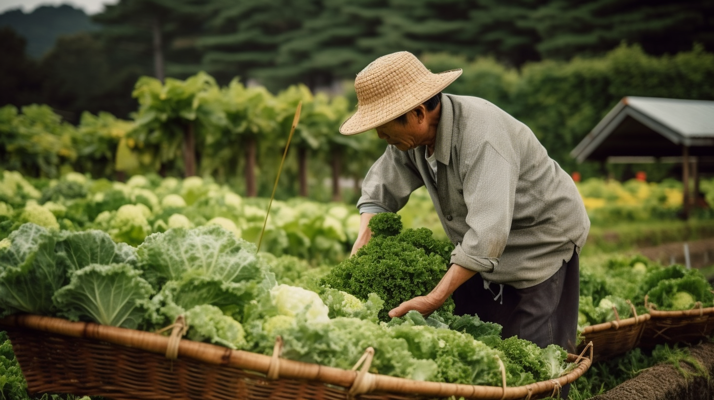

Farmer · Story
每一份食材
背後都有一個名字
我們的農友不只是供應商，
是擁有名字、土地、故事的人。
台灣鮮農讓你認識每一位種下食物的手。
- 200+
- 認證農友
- 18
- 縣市產地
- 7yr
- 深耕年資
Farmers · 本月農友誌



Grain Rain · 節氣限定
雨生百穀。這個節氣，阿甘在修剪茶樹、黃建迪的小羊出生了、情人蜂蜜進入龍眼花期——這五樣東西，是他們這週剛從田裡送出的。
Certifications · 安心與信任
Films · 農友紀錄
15 分鐘、30 分鐘、有時一整個小時。
我們把攝影機放在田埂上，讓他說自己的話。
Selected · 為你挑選
一塊皂裡有一片茶樹林，一甕蜜裡有兩千公里的追花路。
這裡不是貨架，是四位農友最想讓你嚐到的，他們這一季的一件事。

自種十二年的茶樹，低溫慢蒸；一瓶要等三天，他不願讓機器趕時間。
為你推薦你上週看過阿甘的茶樹田 · 本週新採
NT$ 680
從牧場到餐桌，羊頭目都不假手他人——四十年來，只為了讓你吃到的是一隻有名字的羊。
為你推薦穀雨轉涼 · 台式羊肉的季節剛剛好
NT$ 320

追著花季走了兩千公里，一年只做這一批。「蜜不是產出的，」他說，「是等出來的。」
為你推薦龍眼花期剛開始 · 一年只有這一批
NT$ 1,280

在陶甕裡睡了二十年——合作社把它一甕一甕抱出來，阿嬤的味道沒走遠。
為你推薦你關注的合作社剛上新 · 每甕限量
NT$ 480
月結帳期
30 / 60 天彈性
階梯定價
依量自動折扣
食安履歷
每批可溯
專屬窗口
1 對 1 客服